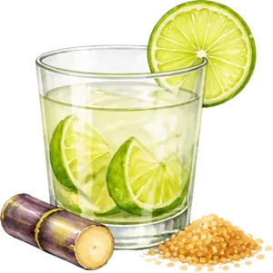
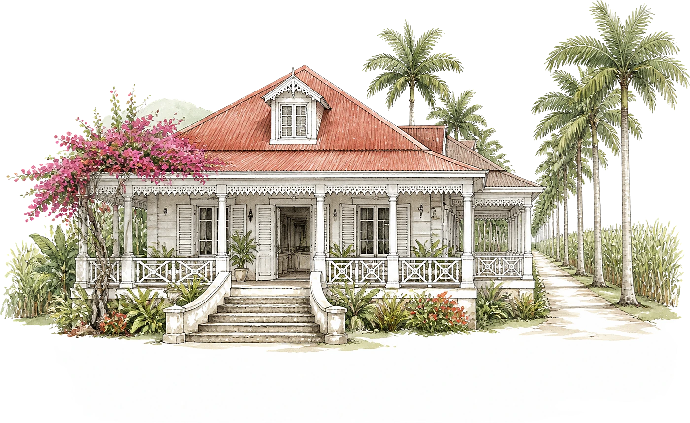
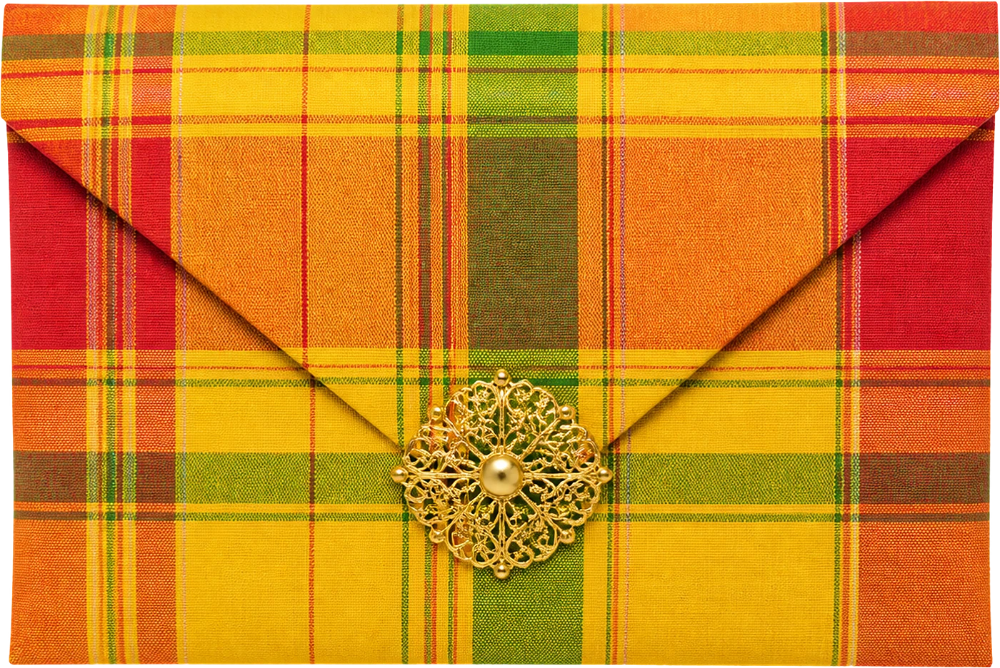
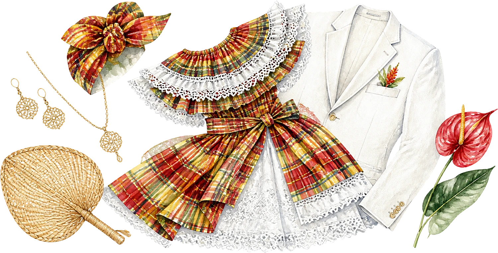

Le programme
Samedi 10 juillet 2027
- 16 h 00Cérémonie à l'église
- 17 h 00Échange des alliances

18 h 00Ti-punch sur la véranda- 19 h 30Accras et dîner créole
- 21 h 30Bal biguine et bélé
- 23 h 30Gâteau des mariés
Le lieu

Habitation des Alizés
Le François

Tenue
Élégance créole
Madras, dentelle blanche et lin bienvenus. Les dames qui le souhaitent peuvent porter la tête attachée.

Il reste
--jours
--heures
--minutes
Votre réponse
Merci de répondre avant le 1er juin 2027.
Je serai présent·eJe ne pourrai pas venir